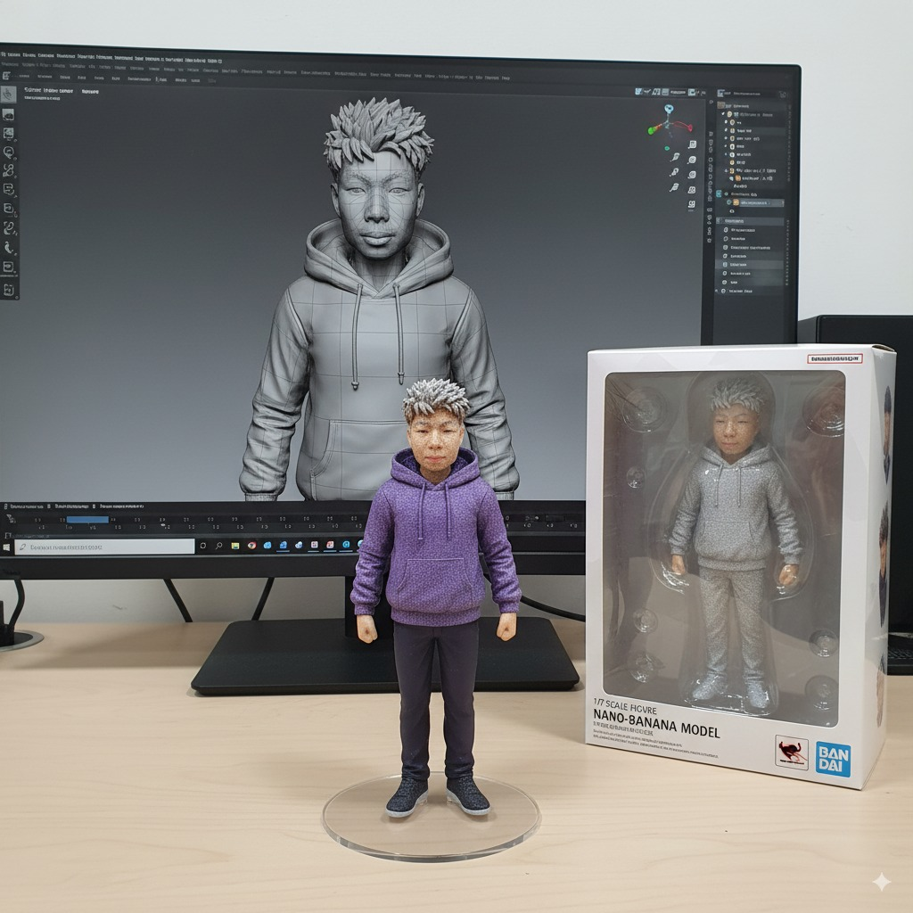
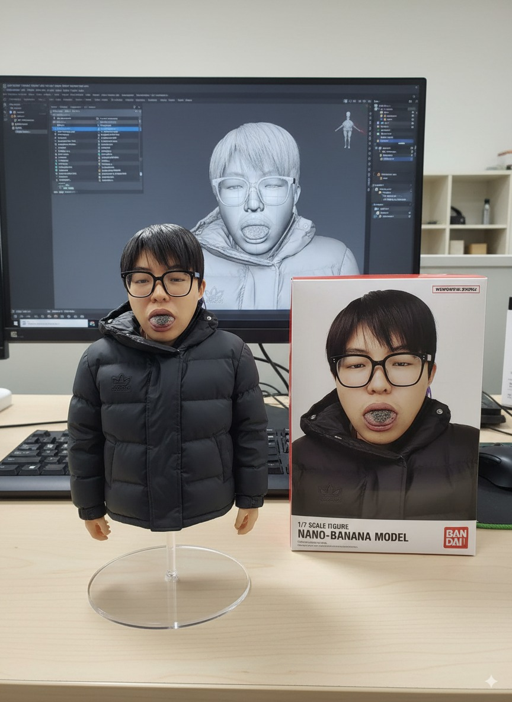
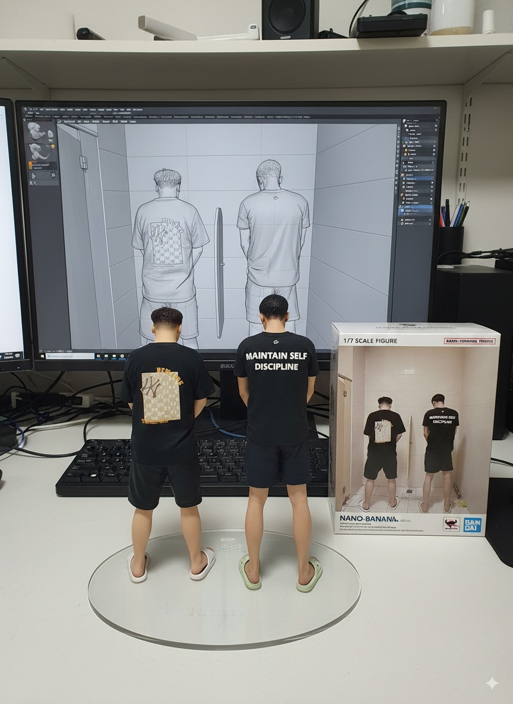

2025-01-06 (忌：写代码)
重大发表：关于我隐藏多年的身份
既然你点进来了，我就不装了，摊牌了。
你好，凡人们！欢迎来到我的精神角落。我是 GIRIMI（的朋友），一名自认为是软件工程师，但实际上只会 Ctrl+C 和 Ctrl+V
的代码搬运工。
为什么要写这个博客？
我一直相信，只要我不尴尬，尴尬的就是别人。当我在键盘上乱敲一通时，我不仅是在制造 Bug，更是在创造一种全新的、没有人能看懂的艺术。
此外，这个博客也是我的忏悔录。多年后回看，我会发现——原来我从一开始就是个逗比，并且在这条路上越走越远，从未回头。
我的核心技术栈
这个网站表面上很高大上，实际上是依托以下“顶尖”技术构建的：
- HTML5 — 会写
<body>和<div>(其他的全靠猜) - 面向百度编程 — 遇到问题先百度，实在不行重启电脑
- DDL 驱动开发 — 只要Deadline没到，我就永远在摸鱼
- 意念调试法 — 盯着屏幕看十分钟，祈祷 Bug 自动消失
我特别喜欢这个网站的自毁功能（并没有）， 它完美诠释了我那摇摇欲坠的精神状态。
下一步计划（画大饼）
在接下来的日子里，我打算在这里分享：
- 如何写出能让同事看一眼就辞职的“屎山”代码
- 论《脱发与编程水平》的正相关性
- 寻找富婆/富豪包养的可行性研究报告
- 每天一遍：我想退休
如果你对这些无聊的话题感兴趣（那你也是个人才），欢迎常来逛逛。你也可以通过 精神病院热线 或 我的垃圾桶 与我联系。
这是神人一号

这是神人二号

这是神人三号

感谢阅读，如果你看到了这里，请给我转账 50 块看看实力！✨